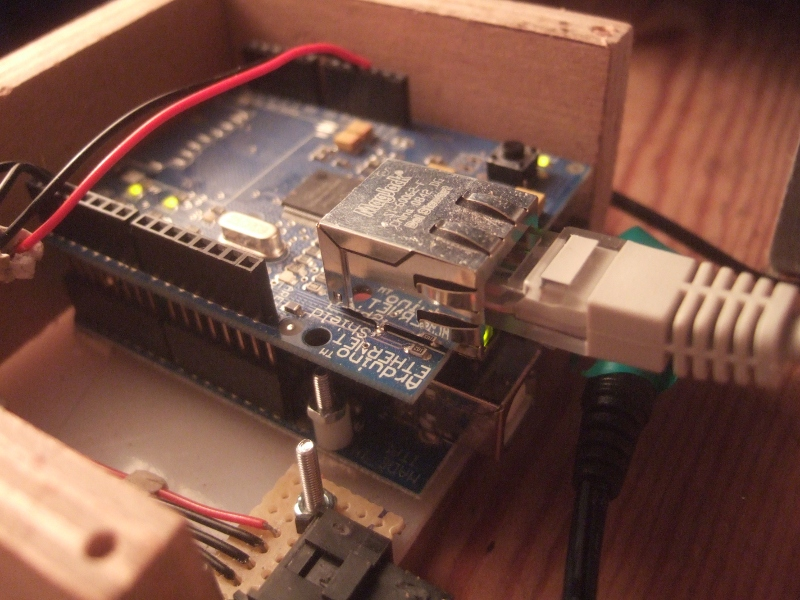
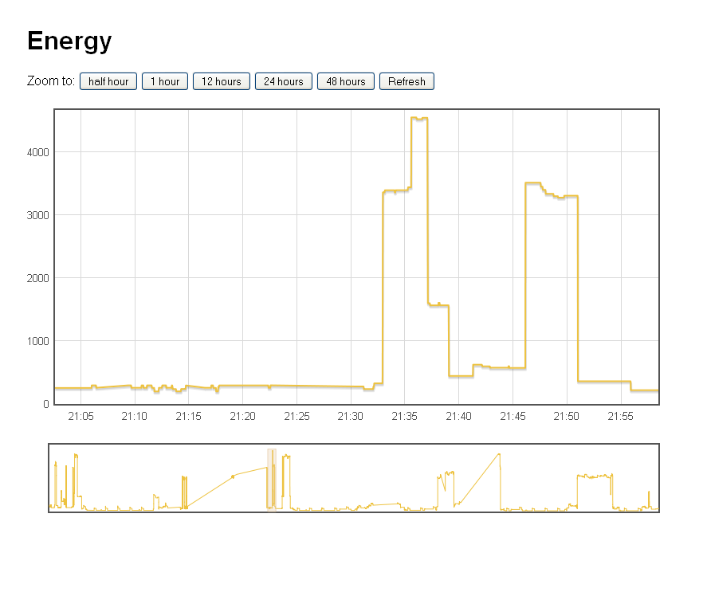

How to look at your energy consumption on the web
This tutorial details how to first connect your energy monitor to the web with an ethernet shield and then how to set up a database on a web-server for the ethernet shield to connect to and then to finish how to read the data from the database and produce a nice zoom-able graph using flot.
I'd like to thank John from jarv.org for his tutorial and help on logging using the ethernet board although he is using open flash charts and sql lite instead of mysql and flot much of the implementation is very similar.
Part One - The Ethernet shield
The first step is to get an Ethernet shield for the Arduino. There are two Ethernet shields available to my knowledge:
- The official ethernet shield from Arduino themselves. Costs £29.00 from cool components.
- Nuelectronics ethernet shield which is a bit cheaper. Costs £12.50 from nuelectronics.
The arduino sketch below works with the official ethernet board library. There is a guide to do the same thing but with the nuelectronics board here: Nuelectronics web client example
Once you have your ethernet shield the next step is to connect it up to an Arduino and upload the sketch.

Arduino Sketch
Note: This sketch is just sends set values out to the server, its just to show the basics needed. Have a look at the whole house energy monitor documentation page for an example of how this can be connected up to the rest of a setup.
Download: SAethernet.tar.gz
There are a couple of changes that need to be made to the arduino sketch now so that we are ready for the next section.
- Make sure the MAC address and ip of the ethernet board are unique on your local area network
- Enter the ip of your webserver. If you have a shared hosting you can find the shared ip using a trace-route program, you can trace-route from network tools in ubuntu.
- If you have a shared hosting you will also need to change the "GET /cgi-bin/post.pl?L=" to include your server url: "GET yoururl.org/cgi-bin/post.pl?L="
The next step is to upload the sketch to the Arduino and then to set up the database.
Part Two - Setting up a database on a web-server and then connecting to it.
The first thing you are going to need is a web host. If you don't already have a web host you can:
- Get web hosting, Im with WebHost.Uk
- Setup a LAMP server on a spare computer running Ubuntu. Here's a tutorial
- Use Pachube and skip this tutorial. (check out this one out in stead) This is the simplest, as the service has been designed with this kind of application in mind. However, at the moment from what I can tell, you cant zoom and view the graphs in any detail, but maybe this will change.
Once you have your server, whether its on your local network, or somewhere outside your local network, the next step is to set up a database to store the data we want to graph.
Create a database with Cpanel (skip to phpmyadmin step if you don't have cpanel)
- Go to MySQL Databases
- Enter a name for your database, for example "power". Click on create database.
- Add a user to your database, create a user with minimal privileges SELECT and INSERT.
- Note down your database name, username and password, you'll need them again soon.
Setup database with phpMyAdmin
- Open phpmyadmin.
- Select your database from the list on the left (or create one if you didn't have cpanel to do the steps above.)
- Create a new table called DATA to with 2 fields A and B.
- On the next page, lets make field A hold the Power data and field B hold the time. Make the power field an int(11) and the time field a bigint(20). Set Null to no and Default to None. Click Save and then Go.
- That's it, the database is ready. The next step is to set up a perl script to access and insert values into the database.
Setting up a perl script
The perl script can be downloaded here: post.tar.gz
- Enter your database name and username in the post.pl file.
- If you're using cpanel: Open file manager and locate your domain document root. If you have a server on a local computer, the folder is /var/www.
- Create a folder named "cgi-bin" if it doesnt exist.
- Upload the perl script to the cgi-bin folder, and set its permission to 755.
- We're ready to test.
- Enter this in your address bar: "http://yoursite.com/cgi-bin/post.pl?L=100&C=200"
- Check your database in phpMyAdmin, click on Browse, hopefully you should see the values 100 and 200.
Start up the Arduino
If all is well, when you connect your Arduino, you should start seeing values being entered into your database.
Adding some basic security
At the moment, anyone can enter the above address in their browser and add values to your database. You can make it possible for only you (your ip address) to have access to the post.pl file by creating a .htaccess file in the cgi-bin directory with the following content:
--------------------------------------------------------
AuthGroupFile /dev/null
AuthName "cgi access"
AuthType Basic
<limit GET>
order deny,allow
deny from all
allow from --your ip address--
</limit>
--------------------------------------------------------
If you don't know your ip address, click this link: http://www.whatismyip.com/
Part Three - Reading from the database and graphing with Flot

Screenshot of flot based graph showing the immersion heater switching on
- Download Flot here.
- Upload Flot to the document root of your domain, and unzip the flot archive.
- Download the flot configuration file/page Graph.tar.gz This is the web page that accesses the database and creates a flot graph from it.
- Upload the config file to your domain document root, and unzip both index.php and layout.css to the document root.
- Enter your database name, username and password in index.php.
- Set permissions to 0644 on both files.
That's it! Have a look at your domain, the graph should appear! and look something like this.